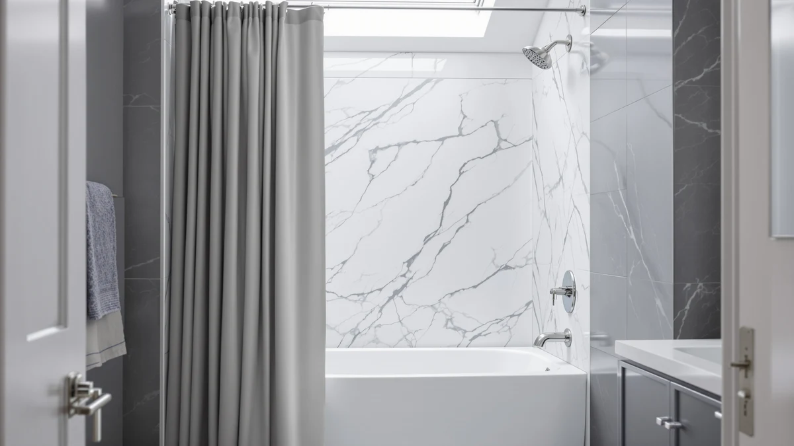

Hookless It's A Snap! Review (2026): Worth It?
Prices and picks verified as of October 2026. Independent, reader-supported reviews.


Quick Answer
This Hookless It's A Snap! review found the Jacquard to be a $44.80 magnetic-sided curtain that skips rings entirely and carries a 4.6 rating from 91,662 reviews, the strongest review history in this comparison. Shoppers on a tighter budget or fitting a clawfoot tub should compare it against the three alternatives below first.
Our pick: Hookless It's A Snap! Jacquard, $44.80 Check Price on Amazon
Bottom line: our top pick is the Hookless It's A Snap! Jacquard Shower Curtain at $44.67.
Things to Know Before You Buy
- The Jacquard gets its name from the It's A Snap! design: magnetic sides let the curtain and liner snap together as one panel, so there is no separate hook or ring hardware to buy.
- At $44.80, it costs more than all three alternatives in this comparison, including the Hookless Waffle, which shares the same brand but drops to $40.15.
- It ships in one size, 71 inches wide by 74 inches long, which fits standard tubs and shower stalls but will not stretch to a wider opening.
- The curtain uses a polyester and PEVA blend, a combination built for water resistance rather than the softer feel of cotton or linen.
- Its 91,662-review history is the largest of the four curtains compared here, tied only with the lower-priced Hookless Waffle.
This Hookless It's A Snap! review puts the Jacquard's magnetic-sided design, $44.80 price, and 71 by 74 inch polyester and PEVA build next to three curtains shoppers often compare it against. The curtain skips rings and hooks entirely, snapping its curtain and liner together over a standard rod, and that single design choice shapes most of what separates it from the field, including setup time and how it pairs with an existing shower rod.
We built this comparison from the product specs, pricing, and listing data for all four curtains, plus the review history each one has gathered on Amazon. The Jacquard carries the highest price in the group at $44.80, a step above Zenna Home's $43.79 curved curtain, Barossa's $41.39 clawfoot pick, and the Hookless Waffle at $40.15. It also carries the deepest review history, a 4.6 rating from 91,662 reviews, tied with its sibling Waffle curtain and well ahead of Barossa's 31,025. A reader comparing four curtains at different price points needs to know whether that extra cost buys anything beyond the Hookless name, and this hookless shower curtain breakdown answers exactly that.
Why You Should Trust Us
Ilane Tall has covered bathroom fixtures and shower hardware for Best Shower Curtains since the site launched, and this Hookless It's A Snap! review follows the same research process the site uses throughout: comparing manufacturer specs, current pricing, and verified owner feedback rather than running a physical testing lab. We do not own a lab, and we do not claim hands-on use of any curtain we cover. Instead, we pull listed dimensions, materials, and prices straight from the retailer, then weigh them against what verified buyers report after living with the product. Readers can find the full methodology behind every review on this site on our how we research page, and that same approach governs this Hookless It's A Snap! review from the pricing table through the final verdict.
Our Research Experience
Our process for this Hookless It's A Snap! review starts with the manufacturer's own listing: material, dimensions, and price, cross-checked against the three comparison curtains on the same criteria. From there, we read through verified buyer reviews on Amazon to see how the magnetic-snap sides hold up over daily use and how the sizing matches real bathrooms. We did not purchase or install any of the four curtains ourselves. Reviewers consistently note that a snap-together curtain and liner cuts setup time compared with a curtain that needs individual hooks, and that feedback shaped how we weighed the Jacquard against its rivals. We also compared each curtain's published rating and review count, since a 91,662-review history carries more weight than a listing with no public rating at all.
Overview & Specs

Hookless It's A Snap! Jacquard
What we like
- Magnetic sides snap the curtain and liner together, removing the need for separate hooks or rings
- Largest review history of the four curtains compared, a 4.6 rating from 91,662 reviews
- Polyester and PEVA blend favors water resistance over absorption
Flaws but not dealbreakers
- At $44.80, it is the most expensive curtain in this comparison, up to $4.65 more than the alternatives
- Ships in a single 71 by 74 inch size, with no wider or longer option listed
| Material | Polyester / PEVA |
| Size | 71x74 |
Hookless builds the Jacquard around one idea: remove the hooks entirely. Instead of a row of grommet holes, magnetic strips sewn into the sides let the curtain and a separate liner snap together as a single panel that slides onto a standard rod, so there is no hardware to buy, lose, or replace when a hook snaps off. At $44.80, it sits at the top of what this comparison covers, costing $1.01 more than Zenna Home's curved curtain, $3.41 more than Barossa's clawfoot pick, and $4.65 more than its own sibling, the Hookless Waffle. The fabric blends polyester and PEVA, a pairing that favors quick drying and water resistance over the softer hand of cotton or linen curtains.
Because the design centers on a snap-together install, setup mostly means lining up the magnetic edges and sliding the assembled panel onto the rod, a step reviewers consistently cite as the reason they moved away from ringed curtains. The tradeoff is sizing flexibility: Hookless does not currently list a wider or extra-long version of the Jacquard, so a nonstandard bathroom, a clawfoot tub, or a shower wider than 71 inches needs a different curtain, such as Barossa's clawfoot-specific pick. The Jacquard does carry the strongest proof of the four, a 4.6 rating from 91,662 reviews that matches the Hookless Waffle and outpaces Barossa's 31,025. For a standard-size bathroom where skipping separate hardware matters more than saving a few dollars, the Jacquard earns its higher price with the deepest track record here.
What We Liked
The biggest draw in this Hookless It's A Snap! review is the magnetic snap design itself. Removing individual grommets means fewer small parts that can crack, bend, or go missing in a bathroom drawer, and it cuts setup down to lining up two magnetic edges instead of threading a dozen rings. The Jacquard's review history is deeper too: a 4.6 rating from 91,662 reviews is the deepest track record of the four curtains here, tied only with its own sibling, the Hookless Waffle, and well ahead of Barossa's 31,025 and Zenna Home's unpublished count. Its polyester and PEVA blend dries faster than cotton alternatives, which matters in a bathroom that does not get much airflow. A standard 71 by 74 inch size also means most shoppers can order it without measuring a rod first, since it matches the size Amazon lists most often for shower curtains.
What Could Be Better
Price is the clearest drawback this Hookless It's A Snap! review turns up. At $44.80, the Jacquard costs more than all three alternatives compared here, including its own sibling Waffle curtain at $40.15, so the snap design and review history come at a real premium rather than a marginal one. The single 71 by 74 inch size is the other limit. Shoppers with a clawfoot tub, an oversized stall, or a rod wider than standard will need to look elsewhere, since Hookless has not published an extra-wide or extra-long cut of the Jacquard. Buyers who prioritize a curved-rod fit or a lower price over the magnetic design should weigh Zenna Home's or Barossa's curtains before paying the premium for this one.
Who Is It For?
The Hookless It's A Snap! Jacquard fits a shopper with a standard-size bathroom who wants to skip buying hooks as a separate purchase and values a deep, published review history over saving a few dollars. It is a reasonable match for a primary bathroom where the curtain stays up for years, since the magnetic sides see daily use. Anyone furnishing a clawfoot tub, a curved rod, or a tighter budget should compare it against Barossa, Zenna Home, or the Hookless Waffle before deciding. A shopper outfitting several bathrooms at once might also browse our best hookless shower curtains roundup for a wider set of ringless options beyond these four. If your bathroom already has a weighted-hem curtain and you are weighing whether a magnetic design is worth switching to, our magnetic vs weighted shower curtain comparison lays out that tradeoff in more detail than this review covers on its own.
Alternatives to Consider
If this Hookless It's A Snap! review's $44.80 price or single straight-rod size rules the Jacquard out, these three alternatives cover a curved-rod fit, a clawfoot-specific cut, and a cheaper curtain from the same brand. All three undercut the Jacquard on price, so swapping between them mostly trades the magnetic snap design for a lower cost or a different rod shape.

Editor’s Pick
Zenna Home Curved Shower Curtain
At $43.79, Zenna Home's Curved Shower Curtain costs $1.01 less than the Jacquard and fits a curved rod directly, a straightforward swap for anyone whose bathroom already has one installed.
$43.79
Check Price on Amazon
Best Value
Barossa Design Waffle Weave Clawfoot
Barossa's Waffle Weave Clawfoot curtain runs $41.39 with a 4.6 rating from 31,025 reviews, and its clawfoot-specific cut covers a tub shape the Jacquard's standard size does not fit.
$41.39
Check Price on Amazon
Premium Choice
Hookless It’s A Snap! Waffle
The Hookless It's A Snap! Waffle shares the Jacquard's magnetic snap design and 4.6 rating from 91,662 reviews at $40.15, trading the jacquard pattern for a textured waffle weave at a lower price.
$40.15
Check Price on AmazonDoes the Hookless It's A Snap! Jacquard come with hooks or rings?
No.
What size is the Hookless It's A Snap! Jacquard?
It ships in one size, 71 inches wide by 74 inches long, in a polyester and PEVA blend.
Frequently Asked Questions
Does the Hookless It's A Snap! Jacquard come with hooks or rings?
No. The It's A Snap! line gets its name from magnetic sides that let the curtain and liner snap together as one panel over a standard rod, so there are no separate rings or hooks to buy or lose.
What size is the Hookless It's A Snap! Jacquard?
It ships in one size, 71 inches wide by 74 inches long, in a polyester and PEVA blend. That covers most standard tubs and shower stalls, but Hookless does not list a wider or longer cut of this curtain.
Is the Hookless It's A Snap! Jacquard worth it compared to Zenna Home, Barossa, and the Hookless Waffle?
At $44.80, the Jacquard is the most expensive of the four curtains in this review. It carries a 4.6 rating from 91,662 reviews, tied with the Hookless Waffle on both counts, while Barossa's clawfoot pick runs cheaper with a smaller 31,025-review history. If the magnetic snap design matters more to you than price, the Jacquard is worth the premium.
Final Verdict
This Hookless It's A Snap! review comes down to price versus proof. The Jacquard costs more than all three alternatives here, up to $4.65 more than its own sibling Waffle curtain, but it pairs that premium with the deepest review history in the comparison, a 4.6 rating from 91,662 reviews. For a standard-size bathroom where skipping separate hooks matters more than shaving a few dollars off the price, the Hookless Jacquard is the pick worth choosing. Shoppers with a curved rod, a clawfoot tub, or a tighter budget should compare Zenna Home, Barossa, or the Hookless Waffle first. None of the four curtains in this comparison asks you to spend more than forty-five dollars, so the real cost of choosing wrong is a short wait for a return label.